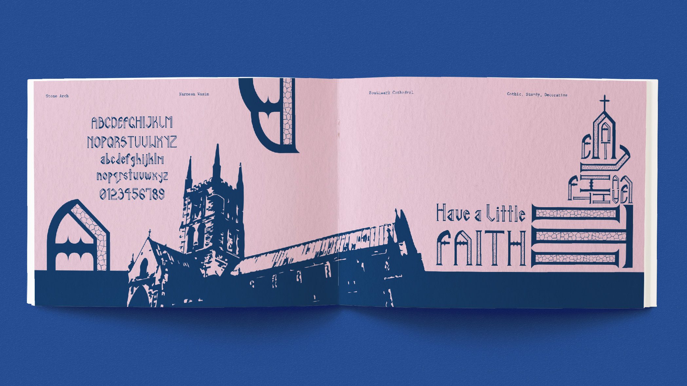
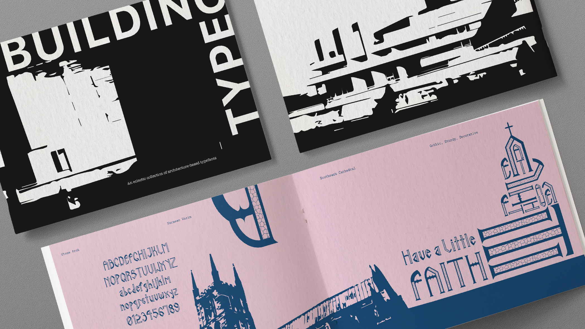
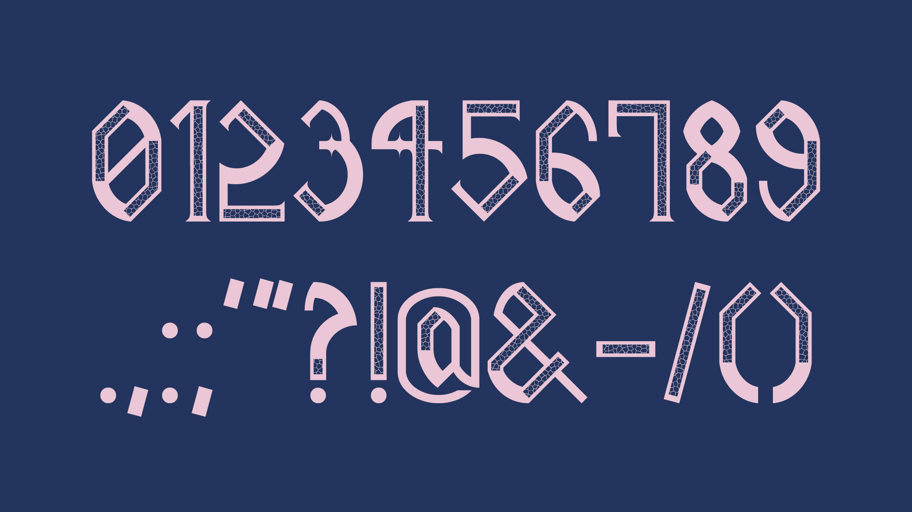

Dawn Of The Cats
Student Project, 2021
This project was based on the theme, "The Meaning of Life". I chose to look inwards and in that moment, the two things that occupied most of my time were my cats and watching horror movies. Therefore I decided to combine the two to create this zine that showcases famous horror movie monsters as cats. The illustrations were all made by me.




